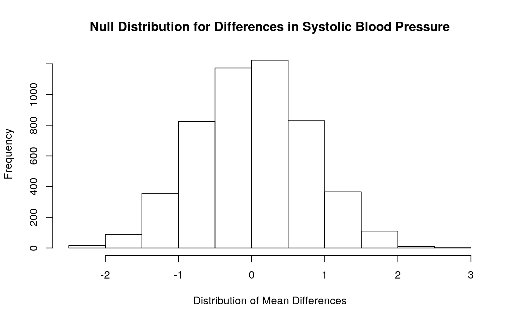
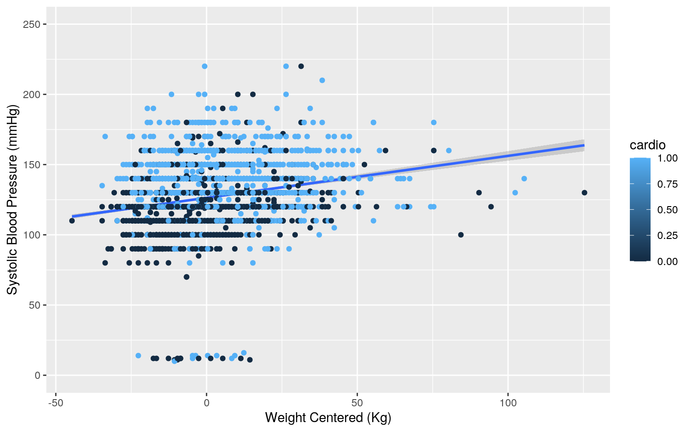
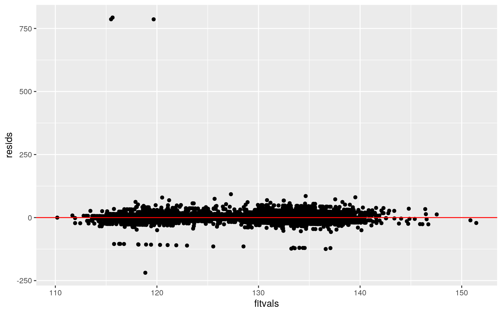
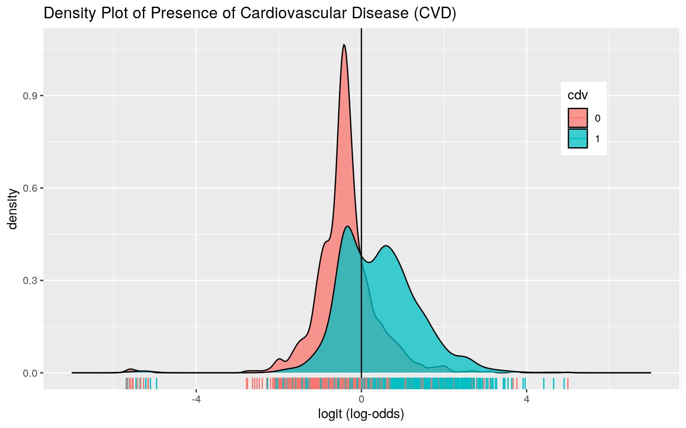
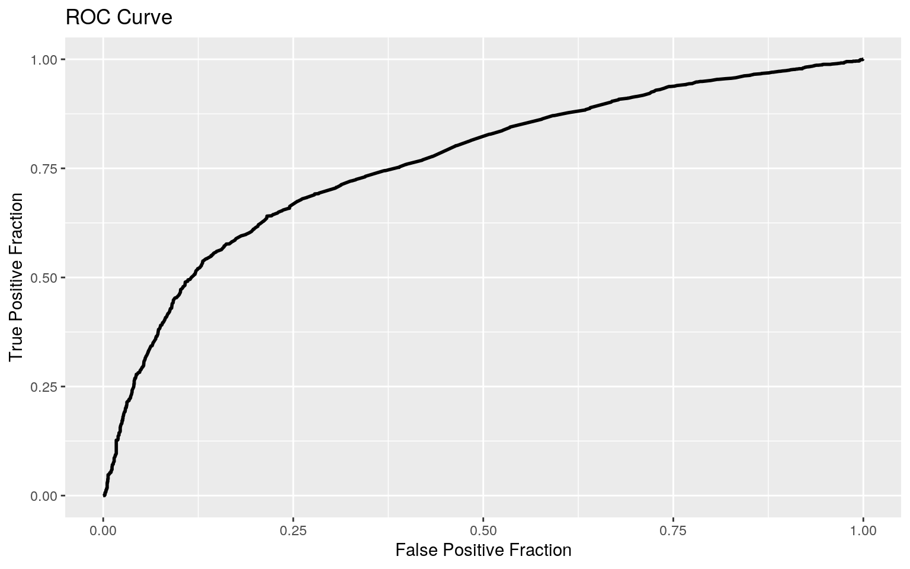

cardiovasc <- read_csv("https://drive.google.com/uc?export=download&id=1m57ntP7oBJ1bL62XwdzZ2292aavet4ax")
cardiovasc <- cardiovasc %>% pivot_longer(col=1, names_to="name", values_to="value") %>% separate("value", into=c("id", "age", "gender", "height", "weight", "ap_hi", "ap_lo", "cholesterol", "gluc", "smoke", "alco", "active", "cardio"), sep=";", convert = T) %>% select(-1, -2) %>% slice(1:5000)The cardiovascular disease dataset used in this project was retrieved from Kaggle and compiled by Svetlana Ulianova, a data science student at Ryerson University, and includes 5,000 observations. The dataset has five variables with binary categories which include gender (1 being female and 2 being male) and whether the patient smokes, drinks alcohol, is physically active or was diagnosed with cardiovascular disease. Five other variables are numeric and include the patient's age in days, height in centimeters, weight in kilograms, and systolic and diastolic blood pressure in mmHg. Cholesterol and glucose both contain three categories that are given the numbers 1 through 3, 1 being normal, 2 being above normal, and 3 being well above normal.
#running manova (1 test)
man2 <- manova(cbind(age, height, weight, ap_hi, ap_lo)~cholesterol, data=cardiovasc)
summary(man2)## Df Pillai approx F num Df den Df Pr(>F)
## cholesterol 1 0.063258 67.448 5 4994 < 2.2e-16 ***
## Residuals 4998
## ---
## Signif. codes: 0 '***' 0.001 '**' 0.01 '*' 0.05 '.' 0.1
' ' 1#running ANOVA (5 tests)
summary.aov(man2)#all characteristics tested differ by cholesterol level ## Response age :
## Df Sum Sq Mean Sq F value Pr(>F)
## cholesterol 1 8.5792e+08 857920054 141.13 < 2.2e-16 ***
## Residuals 4998 3.0382e+10 6078844
## ---
## Signif. codes: 0 '***' 0.001 '**' 0.01 '*' 0.05 '.' 0.1
' ' 1
##
## Response height :
## Df Sum Sq Mean Sq F value Pr(>F)
## cholesterol 1 495 494.80 7.6139 0.005813 **
## Residuals 4998 324803 64.99
## ---
## Signif. codes: 0 '***' 0.001 '**' 0.01 '*' 0.05 '.' 0.1
' ' 1
##
## Response weight :
## Df Sum Sq Mean Sq F value Pr(>F)
## cholesterol 1 27660 27659.6 129.57 < 2.2e-16 ***
## Residuals 4998 1066899 213.5
## ---
## Signif. codes: 0 '***' 0.001 '**' 0.01 '*' 0.05 '.' 0.1
' ' 1
##
## Response ap_hi :
## Df Sum Sq Mean Sq F value Pr(>F)
## cholesterol 1 57098 57098 80.525 < 2.2e-16 ***
## Residuals 4998 3543915 709
## ---
## Signif. codes: 0 '***' 0.001 '**' 0.01 '*' 0.05 '.' 0.1
' ' 1
##
## Response ap_lo :
## Df Sum Sq Mean Sq F value Pr(>F)
## cholesterol 1 221439 221439 5.0688 0.0244 *
## Residuals 4998 218348218 43687
## ---
## Signif. codes: 0 '***' 0.001 '**' 0.01 '*' 0.05 '.' 0.1
' ' 1# post-hoc t-tests (15 tests)
pairwise.t.test(cardiovasc$age, cardiovasc$cholesterol, p.adj="none")##
## Pairwise comparisons using t tests with pooled SD
##
## data: cardiovasc$age and cardiovasc$cholesterol
##
## 1 2
## 2 0.0015 -
## 3 < 2e-16 1.9e-13
##
## P value adjustment method: nonepairwise.t.test(cardiovasc$height, cardiovasc$cholesterol, p.adj="none")##
## Pairwise comparisons using t tests with pooled SD
##
## data: cardiovasc$height and cardiovasc$cholesterol
##
## 1 2
## 2 0.0094 -
## 3 0.0410 0.7738
##
## P value adjustment method: nonepairwise.t.test(cardiovasc$weight, cardiovasc$cholesterol, p.adj="none")##
## Pairwise comparisons using t tests with pooled SD
##
## data: cardiovasc$weight and cardiovasc$cholesterol
##
## 1 2
## 2 2.1e-13 -
## 3 < 2e-16 0.015
##
## P value adjustment method: nonepairwise.t.test(cardiovasc$ap_hi, cardiovasc$cholesterol, p.adj="none")##
## Pairwise comparisons using t tests with pooled SD
##
## data: cardiovasc$ap_hi and cardiovasc$cholesterol
##
## 1 2
## 2 2.2e-09 -
## 3 1.6e-14 0.087
##
## P value adjustment method: nonepairwise.t.test(cardiovasc$ap_lo, cardiovasc$cholesterol, p.adj="none")##
## Pairwise comparisons using t tests with pooled SD
##
## data: cardiovasc$ap_lo and cardiovasc$cholesterol
##
## 1 2
## 2 0.425 -
## 3 0.026 0.235
##
## P value adjustment method: none#21 tests total
#pr(making at least one type I error)
1-(0.95^21)## [1] 0.6594384#Bonferroni adjusted significance level
0.05/21## [1] 0.002380952#MANOVA Assumptions
library(rstatix)
group <- cardiovasc$cholesterol
DVs <- cardiovasc %>% select(age, height, weight, ap_hi, ap_lo)
#Test multivariate normality for each group (null: assumption met)
sapply(split(DVs,group), mshapiro_test)## 1 2 3
## statistic 0.06613253 0.3802545 0.08764061
## p.value 1.534404e-86 2.418611e-43 5.588823e-46#If any p<.05, stop (assumption violated). If not, test homogeneity of covariance matricesThe MANOVA test shows that the patient’s age, height, weight, systolic blood pressure and diastolic blood pressure show a mean difference between patients with cholesterol levels that are normal (1), above normal (2), and well above normal (3). The univariate ANOVAs reveal that all of these numeric variables show a significant mean difference across groups. In total, 21 tests were performed. Thus, the probability of making at least one type I error is 0.6594, and the adjusted significance level is 0.0024.
With this adjusted significance level, height and diastolic blood pressure no longer have a significant mean difference across cholesterol levels. In addition, weight and systolic blood pressure no longer have a significant mean difference between patients with above normal cholesterol levels and patients with well above normal cholesterol levels. All other post-hoc tests showed a significant mean difference across cholesterol levels.
The assumptions for running MANOVA are that the data has multivariate normal distribution and that all groups have homogenous covariance. To assess multivariate normality for each group, a Shapiro-Wilk test was run with the null hypothesis being that the assumption is met. Since the p values for all three cholesterol levels were below 0.05, we have failed the multivariate normality assumption and likely have also failed the assumption of homogeneity of covariance.
#mean difference = 13.95482
cardiovasc %>% group_by(cardio) %>% summarize(mean_systolic_bp = mean(ap_hi)) %>% summarize(diff(mean_systolic_bp))## # A tibble: 1 x 1
## `diff(mean_systolic_bp)`
## <dbl>
## 1 14.0#permutation test
rand_dist <- vector()
for(i in 1:5000){
new<-data.frame(sys_bp=sample(cardiovasc$ap_hi), cardio_disease=cardiovasc$cardio)
rand_dist[i]<- mean(new[new$cardio_disease=="1",]$sys_bp)- mean(new[new$cardio_disease=="0",]$sys_bp)}
#p value = 0
mean(rand_dist < -13.95482 | rand_dist > 13.95482)## [1] 0{hist(rand_dist, main="Null Distribution for Differences in Systolic Blood Pressure", xlab="Distribution of Mean Differences"); abline(v = c(13.95482, -13.95482), col="blue")}
The null hypothesis is that the mean systolic blood pressure is the same for those with and without cardiovascular disease. The alternative hypothesis is that the mean systolic blood pressure for those with cardiovascular disease is different from those without cardiovascular disease. The mean difference in systolic blood pressure between those with and without cardiovascular disease is 13.9548. The p-value of the test was 0, suggesting that there is a significant mean difference in systolic blood pressure across both groups.
3. (35 pts) Build a linear regression model predicting one of your response variables from at least 2 other variables, including their interaction. Mean-center any numeric variables involved in the interaction.
ggplot() using geom_smooth(method="lm"). If your interaction is numeric by numeric, refer to code in the slides to make the plot or check out the interactions package, which makes this easier. If you have 3 or more predictors, just chose two of them to plot for convenience. (8)coeftest(..., vcov=vcovHC(...)). Discuss significance of results, including any changes from before/after robust SEs if applicable. (8)cardiovasc$weight_c <- cardiovasc$weight - mean(cardiovasc$weight, na.rm=T)
cardiovasc$age_c <- cardiovasc$age - mean(cardiovasc$age, na.rm=T)
fit <- lm(ap_hi~age_c+weight_c*cardio, data=cardiovasc)
summary(fit)##
## Call:
## lm(formula = ap_hi ~ age_c + weight_c * cardio, data =
cardiovasc)
##
## Residuals:
## Min 1Q Median 3Q Max
## -218.86 -10.30 -0.35 7.15 793.37
##
## Coefficients:
## Estimate Std. Error t value Pr(>|t|)
## (Intercept) 1.206e+02 5.328e-01 226.429 < 2e-16 ***
## age_c 5.758e-04 1.501e-04 3.837 0.000126 ***
## weight_c 1.820e-01 3.796e-02 4.796 1.67e-06 ***
## cardio 1.223e+01 7.630e-01 16.028 < 2e-16 ***
## weight_c:cardio 8.514e-04 5.067e-02 0.017 0.986594
## ---
## Signif. codes: 0 '***' 0.001 '**' 0.01 '*' 0.05 '.' 0.1
' ' 1
##
## Residual standard error: 25.75 on 4995 degrees of
freedom
## Multiple R-squared: 0.08008, Adjusted R-squared: 0.07934
## F-statistic: 108.7 on 4 and 4995 DF, p-value: < 2.2e-16#ap_hi = 120.6482 + 0.0006(age_c) + 0.1820(weight_c) + (12.2284)cardio + 0.0009(weight_c*cardio)
cardiovasc %>% ggplot(aes(weight_c, ap_hi))+geom_smooth(method = "lm") + geom_point(aes(color=cardio)) + ylim(0,250) + xlab("Weight Centered (Kg)") + ylab("Systolic Blood Pressure (mmHg)")
#Check assumptions
#Normality
resids<-fit$residuals
ks.test(resids, "pnorm", mean=0, sd(resids)) ##
## One-sample Kolmogorov-Smirnov test
##
## data: resids
## D = 0.16197, p-value < 2.2e-16
## alternative hypothesis: two-sided#Linearity
fitvals <-fit$fitted.values
ggplot()+geom_point(aes(fitvals,resids)) + geom_hline(yintercept=0, color="red") 
#Homoskedasticity
library(sandwich); library(lmtest)
bptest(fit)##
## studentized Breusch-Pagan test
##
## data: fit
## BP = 6.3486, df = 4, p-value = 0.1746#Regression with robust standard errors
coeftest(fit, vcov=vcovHC(fit))##
## t test of coefficients:
##
## Estimate Std. Error t value Pr(>|t|)
## (Intercept) 1.2065e+02 5.3098e-01 227.2202 < 2.2e-16 ***
## age_c 5.7578e-04 2.1265e-04 2.7077 0.006799 **
## weight_c 1.8203e-01 4.0304e-02 4.5165 6.433e-06 ***
## cardio 1.2228e+01 6.5803e-01 18.5833 < 2.2e-16 ***
## weight_c:cardio 8.5135e-04 4.7399e-02 0.0180 0.985670
## ---
## Signif. codes: 0 '***' 0.001 '**' 0.01 '*' 0.05 '.' 0.1
' ' 1#proportion of variation (R^2)
systolic <- cardiovasc$ap_hi
sum((fitvals-mean(systolic))^2)/sum((systolic-mean(systolic))^2)## [1] 0.08007554For patients of average weight and height, the predicted systolic blood pressure for patients without cardiovascular is 120.6482 mmHg while patients with cardiovascular disease have a systolic blood pressure that is 12.2284 mmHg higher. For patients who don’t have cardiovascular disease, every 1 day increase in age for patients of average weight results in a 0.0006 mmHg increase in systolic blood pressure, while every 1 Kg increase in weight for patients of average age results in a 0.1820 mmHg increase. The slope of weight on systolic blood pressure for people with cardiovascular disease is 0.0009 greater than the slope for people without cardiovascular disease.
In order to check for normality, a Kolmogorov-Smirnov test was used. The null hypothesis was that the true distribution is normal, and since the p-value was below 0.05, the model fails the normality assumption. However, the model appears to be roughly linear when assessing the scatter plot. A studentized Breusch-Pagan test was used to assess for homoskedasticity and resulted in a p-value of 0.1746. Thus, the model is homoskedastic.
Since the model failed the normality assumption, a new regression was carried out using robust standard errors. For both the original model and the model with robust standard errors, all main effects (age, weigh, and presence of cardiovascular disease) were significant, yet the interaction between weight and cardiovascular disease was not significant. Thus, the conclusion remains the same. The proportion of variation that can be explained by the model is 0.0801.
cardiovasc$weight_c <- cardiovasc$weight - mean(cardiovasc$weight, na.rm=T)
cardiovasc$age_c <- cardiovasc$age - mean(cardiovasc$age, na.rm=T)
#bootstrap resampling observations
samp_distn <- replicate(5000, {
boot_dat <- sample_frac(cardiovasc, replace=T)
fit1 <- lm(ap_hi~age_c+weight_c*cardio, data=boot_dat)
coef(fit1)
})
samp_distn %>% t %>% as.data.frame %>% summarize_all(sd)## (Intercept) age_c weight_c cardio weight_c:cardio
## 1 0.5286203 0.0002118751 0.0410655 0.6638271 0.04828472#SE of intercept is about the same, whereas the SEThe bootstrapped SEs found after resampling observations were closer to the robust SEs than the SEs of the original model. For instance, while the original SE for weight was 0.0380, the robust SE was 0.0403 and the bootstrapped SE was 0.0402. For the presence of cardiovascular disease, the original SE was 0.7630 while the robust SE was 0.6580 and the bootstrapped SE was 0.6604. Similarly, the original SE for the interaction between weight and cardiovascular disease was 0.0507, which is slightly higher than the robust SE of 0.0477 and bootstrapped SE of 0.0473. In contrast, the original, robust and bootstrapped SE for age remained the same at 0.0002.
Being that the robust SEs and the bootstrapped SEs were so similar, it is likely that the conclusion would remain the same with all main effects being significant.
5. (25 pts) Fit a logistic regression model predicting a binary variable (if you don't have one, make/get one) from at least two explanatory variables (interaction not necessary).
fit_log <-glm(cardio~ap_hi+weight, data=cardiovasc, family="binomial")
exp(coef(fit_log))## (Intercept) ap_hi weight
## 0.0006784373 1.0482397345 1.0183622097#Confusion matrix
probs<-predict(fit_log, type="response")
truth <- cardiovasc$cardio
table(predict=as.numeric(probs>0.5), truth) %>% addmargins## truth
## predict 0 1 Sum
## 0 1975 927 2902
## 1 527 1571 2098
## Sum 2502 2498 5000#Classification diagnostics
class_diag<-function(probs,truth){
tab<-table(factor(probs>.5,levels=c("FALSE","TRUE")),truth)
acc=sum(diag(tab))/sum(tab)
sens=tab[2,2]/colSums(tab)[2]
spec=tab[1,1]/colSums(tab)[1]
ppv=tab[2,2]/rowSums(tab)[2]
f1=2*(sens*ppv)/(sens+ppv)
if(is.numeric(truth)==FALSE & is.logical(truth)==FALSE){
truth<-as.numeric(truth)-1}
#CALCULATE EXACT AUC
ord<-order(probs, decreasing=TRUE)
probs <- probs[ord]; truth <- truth[ord]
TPR=cumsum(truth)/max(1,sum(truth))
FPR=cumsum(!truth)/max(1,sum(!truth))
dup<-c(probs[-1]>=probs[-length(probs)], FALSE)
TPR<-c(0,TPR[!dup],1); FPR<-c(0,FPR[!dup],1)
n <- length(TPR)
auc<- sum( ((TPR[-1]+TPR[-n])/2) * (FPR[-1]-FPR[-n]) )
data.frame(acc,sens,spec,ppv,f1,auc)
}
class_diag(probs, cardiovasc$cardio)## acc sens spec ppv f1 auc
## 1 0.7092 0.6289031 0.7893685 0.7488084 0.6836379
0.7640854cardiovasc$cdv <- as.factor(cardiovasc$cardio)
cardiovasc$logit<-predict(fit_log,type="link")
cardiovasc%>%ggplot(aes(x=logit, fill=cdv))+geom_density(alpha=.75)+
theme(legend.position=c(.85,.75))+geom_vline(xintercept=0)+xlab("logit (log-odds)")+ geom_rug(aes(logit,color=cdv)) + xlim(-7,7) + ggtitle("Density Plot of Presence of Cardiovascular Disease (CVD)")
library(plotROC)
ggplot(fit_log) + geom_roc(aes(d=cardio, m=probs), n.cuts=0) + xlab("False Positive Fraction") + ylab("True Positive Fraction") + ggtitle("ROC Curve") The odds of having a cardiovascular disease for patients with a systolic blood pressure of 0 and weight of 0 is 0.6292. While controlling for weight, for every 1 mmHg increase in systolic blood pressure, the odds of having cardiovascular disease increases by a factor of 1.0482. While controlling for systolic blood pressure, for every 1 Kg increase in body weight, the odds of having cardiovascular disease increases by 1.0184.
The overall accuracy is 0.7092, with a true positive rate (sensitivity) of 0.6289 and a true negative rate (specificity) of 0.7894. The precision, or the proportion of patients classified with cardiovascular disease who actually had cardiovascular disease, is 0.7488.
The density plot shows a lot of overlap between those who have cardiovascular disease and those who do not have cardiovascular disease. Nevertheless, the AUC was 0.7641, suggesting that this model is a fair predictor of cardiovascular disease.
lambda.1se). Discuss which variables are retained. (5)fit_log_all <- glm(cardio~., data=cardiovasc, family = "binomial")
exp(coef(fit_log_all))## (Intercept) age gender height weight ap_hi ap_lo
## 6.459094e-05 1.000147e+00 9.426804e-01 1.000660e+00
1.016628e+00 1.040096e+00 1.001796e+00
## cholesterol gluc smoke alco active
## 1.756742e+00 8.831927e-01 9.582489e-01 9.441013e-01
7.843336e-01probs_all <-predict(fit_log_all, type="response")
class_diag(probs_all, cardiovasc$cardio) ## acc sens spec ppv f1 auc
## 1 0.716 0.6705364 0.7613909 0.7372359 0.7023061 0.7887936#10-fold CV
k=10
data1 <- cardiovasc[sample(nrow(cardiovasc)),]
folds <- cut(seq(1:nrow(cardiovasc)), breaks=k, labels=F)
diags <- NULL
for (i in 1:k){
train <-data1[folds!=i,]
test <- data1[folds==i,]
truth <- test$cardio
fit <- glm(cardio~., data=train, family="binomial")
probs <- predict(fit, newdata=test, type="response")
diags <- rbind(diags, class_diag(probs,truth))
}
summarize_all(diags,mean) ## acc sens spec ppv f1 auc
## 1 0.7162 0.6711527 0.7609966 0.7375454 0.702394 0.7871075#LASSO
library(glmnet)
cardiovasc_response <- as.matrix(cardiovasc$cardio)
cardiovasc_preds <- model.matrix(cardio~., data=cardiovasc)[,-1]
cardiovasc_preds <- scale(cardiovasc_preds)
cv <- cv.glmnet(cardiovasc_preds, cardiovasc_response, family="binomial")
lasso_fit <- glmnet(cardiovasc_preds, cardiovasc_response, family="binomial", lambda = cv$lambda.1se)
coef(lasso_fit) #age, weight, ap_hi, ap_lo, cholesterol, and active## 12 x 1 sparse Matrix of class "dgCMatrix"
## s0
## (Intercept) 0.02638858
## age 0.31143583
## gender .
## height .
## weight 0.19356771
## ap_hi 0.92048073
## ap_lo 0.02260790
## cholesterol 0.29808627
## gluc .
## smoke .
## alco .
## active -0.03981493#Re-run 10-fold CV
data2 <- cardiovasc[sample(nrow(cardiovasc)),]
folds <- cut(seq(1:nrow(cardiovasc)), breaks=k, labels=F)
diags <- NULL
for (i in 1:k){
train <-data2[folds!=i,]
test <- data2[folds==i,]
truth <- test$cardio
fit <- glm(cardio~age+weight+ap_hi+ap_lo+cholesterol+active, data=train, family="binomial")
probs <- predict(fit, newdata=test, type="response")
diags <- rbind(diags, class_diag(probs,truth))
}
summarize_all(diags,mean) ## acc sens spec ppv f1 auc
## 1 0.7132 0.6627555 0.7636753 0.7363256 0.6971221
0.7880073When fitting the logistic regression model using all of the variables in the cardiovascular dataset, the accuracy was 0.7160, the sensitivity was 0.6705, the specificity was 0.7614, and the AUC was 0.7888, suggesting that this model is fair at predicting the presence of cardiovascular disease within the dataset.
When performing ten-fold cross validation using the same model, the average out-of-sample accuracy was 0.7142, the sensitivity was 0.6665, the specificity was 0.7631, and the AUC was 0.7872. Since the AUC decreased after cross validation, this suggests that the model that includes all of the predictors is overfitted.
The variables that are retained upon performing LASSO are age, weight, systolic blood pressure, cholesterol and activity. Upon re-running the ten-fold cross validation using these variables, the out-of-sample AUC increased to 0.7883, which is still slightly lower than the model including all the variables. Thus, this model still might not be the best at making out-of-sample predictions.
...